Tests
42 test(s) passed
3 test(s) failed, 0 others
Steps
537 step(s) passed
3 step(s) failed, 0 others
Tests
-
HomepageHeaderMyIcivicsMisc Jun 28, 2022 08:27:38 PM failJun 28, 2022 08:27:38 PM Jun 28, 2022 08:37:05 PM 0h 9m 27s+107ms
-
C29 - Can you see an appropriate icon for Donate?
Jun 28, 2022 08:27:49 PM 0h 0m 7s+121ms passStatus Timestamp Details check_circle 8:27:49 PM Donatebutton is displayed 
-
C30 - When you select Donate, are you directed to https://give.icivics.org/?
Jun 28, 2022 08:28:17 PM 0h 0m 25s+968ms passStatus Timestamp Details check_circle 8:27:59 PM Donatebutton is clicked 
check_circle 8:28:17 PM 'Donatebutton is clicked'redirect to corresponding pagehttps://give.icivics.org/q7Mcn0NUdUylSaBbpfwl4w2?_ga=2.171977187.1128139327.1656428277-2144586717.1656428276 
-
C31 - Can you see an appropriate icon for Shop?
Jun 28, 2022 08:28:27 PM 0h 0m 7s+452ms passStatus Timestamp Details check_circle 8:28:27 PM Shopbutton is displayed 
-
C32 - When you select Shop, are you directed to https://icivics.myshopify.com/?
Jun 28, 2022 08:28:38 PM 0h 0m 9s+297ms passStatus Timestamp Details check_circle 8:28:34 PM Shopbutton is clicked 
check_circle 8:28:38 PM 'Shopbutton is clicked'redirect to corresponding pagehttps://icivics.myshopify.com/ 
-
C34 - If you are signed in, do you see a My iCivics button instead of Sign In?
Jun 28, 2022 08:29:07 PM 0h 0m 26s+977ms passStatus Timestamp Details check_circle 8:29:07 PM Myicivicsbutton is display after login instead of signin button 
-
C35 - Can you see your avatar icon represented in the button?
Jun 28, 2022 08:29:40 PM 0h 0m 31s+261ms passStatus Timestamp Details check_circle 8:29:40 PM Avatar image is displayed on the button 
-
C35 - Can you see your avatar icon represented in the button?
Jun 28, 2022 08:30:14 PM 0h 0m 30s+737ms passStatus Timestamp Details check_circle 8:30:14 PM My iCivics button has sillouette avatar 
-
C36 - When you select Sign In/My iCivics, does a submenu open below the button?
Jun 28, 2022 08:30:45 PM 0h 0m 29s+396ms passStatus Timestamp Details check_circle 8:30:45 PM myicivics button is clicked and submenu is display 
-
C37 - When you select Sign In, do you see links to Sign In, Register As a Student, Register As A Teacher in the submenu?
Jun 28, 2022 08:31:17 PM 0h 0m 29s+186ms passStatus Timestamp Details check_circle 8:31:15 PM myicivics button is clicked and submenu is display 
check_circle 8:31:16 PM myicivics submenu count is 3 
check_circle 8:31:16 PM myicivcs submenu is MY ICIVICS 
check_circle 8:31:16 PM myicivcs submenu is MY CLASSES 
check_circle 8:31:17 PM myicivcs submenu is MY FAVORITES 
-
C39 -When you select a link in the submenu, are you navigated to the appropriate page?
Jun 28, 2022 08:34:13 PM 0h 2m 54s+255ms passStatus Timestamp Details check_circle 8:32:15 PM The mouse over by xpath : (//a[@title='MY ICIVICS'])[2] is performed. 
check_circle 8:32:16 PM The element [[ChromeDriver: chrome on WINDOWS (637c3aff228e8749b4e4c7451b224e82)] -> xpath: (//a[@title='My iCivics'])[2]] is visible 
check_circle 8:32:16 PM The expected text contains the actual MY ICIVICS 
check_circle 8:32:42 PM The Element MY ICIVICS clicked 
check_circle 8:32:42 PM The expected https://staging.d9.icivics.org/user/9306834 url as same as the https://staging.d9.icivics.org/user/9306834 actual url. 
check_circle 8:32:42 PM The expected text contains the actual Welcome back, 
check_circle 8:32:43 PM The mouse over by xpath : (//a[@title='MY ICIVICS'])[2] is performed. 
check_circle 8:32:43 PM The element [[ChromeDriver: chrome on WINDOWS (637c3aff228e8749b4e4c7451b224e82)] -> xpath: (//a[@title='My Classes'])[2]] is visible 
check_circle 8:32:44 PM The expected text contains the actual MY CLASSES 
check_circle 8:33:38 PM The Element MY CLASSES clicked 
check_circle 8:33:38 PM The expected https://staging.d9.icivics.org/classes url as same as the https://staging.d9.icivics.org/classes actual url. 
check_circle 8:33:39 PM The expected text contains the actual SYNC CLASSROOM CLASSES 
check_circle 8:33:39 PM The mouse over by xpath : (//a[@title='MY ICIVICS'])[2] is performed. 
check_circle 8:33:40 PM The element [[ChromeDriver: chrome on WINDOWS (637c3aff228e8749b4e4c7451b224e82)] -> xpath: (//a[@title='My Favorites'])[2]] is visible 
check_circle 8:33:40 PM The expected text contains the actual MY FAVORITES 
check_circle 8:34:12 PM The Element MY FAVORITES clicked 
check_circle 8:34:12 PM The expected https://staging.d9.icivics.org/favorites url as same as the https://staging.d9.icivics.org/favorites actual url. 
check_circle 8:34:13 PM The expected text contains the actual Lessons from Antiquity 
-
C41 -If you are viewing one of the pages in the Sign In/My iCivics submenu, is that page underlined in the submenu?
Jun 28, 2022 08:36:33 PM 0h 2m 16s+269ms failStatus Timestamp Details check_circle 8:34:53 PM myicivics button is clicked and submenu is display 
check_circle 8:35:24 PM Selected page is underlined 
cancel 8:35:58 PM Selected page is not underlined 
check_circle 8:36:32 PM Selected page is underlined 
check_circle 8:36:33 PM The Element MY ICIVICS clicked 
check_circle 8:36:33 PM Myicivics submenu is close on clicking again 
-
C42 - When you select Sign In / My iCivics again while the submenu is open, does the submenu close?
Jun 28, 2022 08:37:05 PM 0h 0m 30s+294ms passStatus Timestamp Details check_circle 8:37:05 PM The Element MY ICIVICS clicked 
check_circle 8:37:05 PM Myicivics submenu is close on clicking again 
-
-
HomepageHeadermysigninmisc Jun 28, 2022 08:37:06 PM failJun 28, 2022 08:37:06 PM Jun 28, 2022 08:39:46 PM 0h 2m 40s+243ms
-
C29 - Can you see an appropriate icon for Donate?
Jun 28, 2022 08:37:17 PM 0h 0m 9s+188ms passStatus Timestamp Details check_circle 8:37:17 PM Donatebutton is displayed 
-
C30 - When you select Donate, are you directed to https://give.icivics.org/?
Jun 28, 2022 08:37:42 PM 0h 0m 23s+400ms passStatus Timestamp Details check_circle 8:37:27 PM Donatebutton is clicked check_circle 8:37:42 PM 'Donatebutton is clicked'redirect to corresponding pagehttps://give.icivics.org/q7Mcn0NUdUylSaBbpfwl4w2?_ga=2.75907158.278493551.1656428845-1255080701.1656428844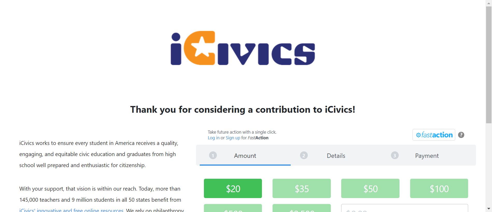 -
C31 - Can you see an appropriate icon for Shop?
Jun 28, 2022 08:37:53 PM 0h 0m 8s+330ms passStatus Timestamp Details check_circle 8:37:53 PM Shopbutton is displayed 
-
C32 - When you select Shop, are you directed to https://icivics.myshopify.com/?
Jun 28, 2022 08:38:05 PM 0h 0m 10s+599ms passStatus Timestamp Details check_circle 8:38:01 PM Shopbutton is clicked 
check_circle 8:38:05 PM 'Shopbutton is clicked'redirect to corresponding pagehttps://icivics.myshopify.com/ 
-
C33 - If you are not signed in, do you see a Sign In button instead of My iCivics?
Jun 28, 2022 08:38:13 PM 0h 0m 6s+182ms passStatus Timestamp Details check_circle 8:38:13 PM Signinbutton is displayed 
-
C37 - When you select Sign In, do you see links to Sign In, Register As a Student, Register As A Teacher in the submenu?
Jun 28, 2022 08:38:23 PM 0h 0m 7s+869ms passStatus Timestamp Details check_circle 8:38:21 PM signinbutton is clicked and submenu is displayed 
check_circle 8:38:22 PM signinbutton submenu count is 3 
check_circle 8:38:22 PM signinbutton submenu is SIGN IN 
check_circle 8:38:23 PM signinbutton submenu is REGISTER AS A STUDENT 
check_circle 8:38:23 PM signinbutton submenu is REGISTER AS A TEACHER 
-
C38 - If not signed in and you select a link in the submenu, are you navigated to the appropriate page?
Jun 28, 2022 08:38:46 PM 0h 0m 20s+756ms passStatus Timestamp Details check_circle 8:38:33 PM The mouse over by xpath : (//a[@title='Sign In']//span)[3] is performed. 
check_circle 8:38:33 PM The element [[ChromeDriver: chrome on WINDOWS (dc5a385cd213cc909ea5c58ac7bf9446)] -> xpath: (//a[@title='Sign In'])[4]] is visible 
check_circle 8:38:34 PM The expected text contains the actual SIGN IN 
check_circle 8:38:36 PM The Element SIGN IN clicked 
check_circle 8:38:36 PM The expected https://staging.d9.icivics.org/user/login url as same as the https://staging.d9.icivics.org/user/login actual url. 
check_circle 8:38:36 PM The expected text contains the actual Log in to iCivics 
check_circle 8:38:37 PM The mouse over by xpath : (//a[@title='Sign In']//span)[3] is performed. 
check_circle 8:38:37 PM The element [[ChromeDriver: chrome on WINDOWS (dc5a385cd213cc909ea5c58ac7bf9446)] -> xpath: (//li[@class='register as a student']/a)[2]] is visible 
check_circle 8:38:37 PM The expected text contains the actual REGISTER AS A STUDENT 
check_circle 8:38:40 PM The Element REGISTER AS A STUDENT clicked 
check_circle 8:38:41 PM The expected https://staging.d9.icivics.org/user/register?role=student&email=1 url as same as the https://staging.d9.icivics.org/user/register?role=student&email=1 actual url. 
check_circle 8:38:41 PM The expected text contains the actual Student Registration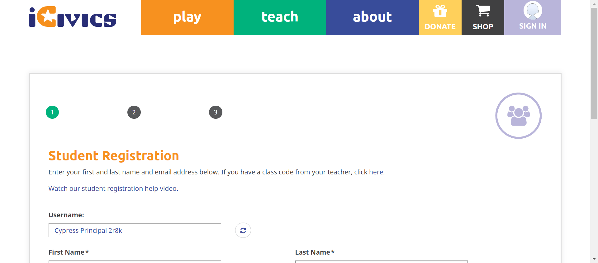 check_circle 8:38:41 PM The mouse over by xpath : (//a[@title='Sign In']//span)[3] is performed. check_circle 8:38:41 PM The element [[ChromeDriver: chrome on WINDOWS (dc5a385cd213cc909ea5c58ac7bf9446)] -> xpath: (//li[@class='active active-trail last register as a teacher']/a)[2]] is visible 
check_circle 8:38:42 PM The expected text contains the actual REGISTER AS A TEACHER 
check_circle 8:38:45 PM The Element REGISTER AS A TEACHER clicked 
check_circle 8:38:46 PM The expected https://staging.d9.icivics.org/user/register?role=teacher url as same as the https://staging.d9.icivics.org/user/register?role=teacher actual url. 
check_circle 8:38:46 PM The expected text contains the actual Educator / Parent Registration 
-
C41 - If you are viewing one of the pages in the Sign In/My iCivics submenu, is that page underlined in the submenu?
Jun 28, 2022 08:39:36 PM 0h 0m 47s+641ms failStatus Timestamp Details check_circle 8:38:58 PM Signinbutton is displayed 
check_circle 8:39:09 PM Selected page is underlined 
cancel 8:39:22 PM Selected page is not underlined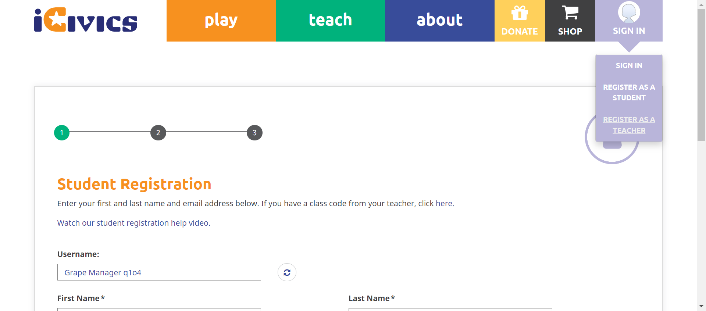 check_circle 8:39:35 PM Selected page is underlined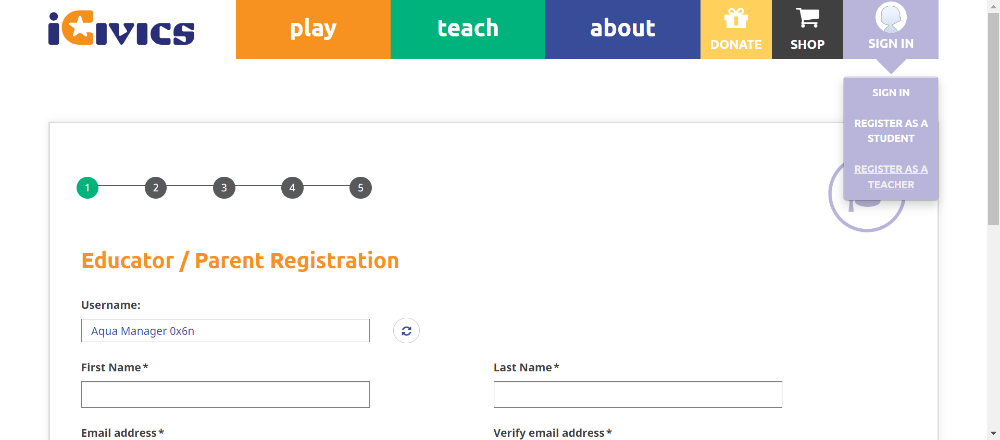 check_circle 8:39:36 PM The Element SIGN IN clicked 
check_circle 8:39:36 PM signin submenu is close after clicking again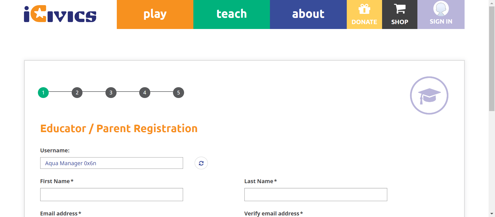 -
C42 - When you select Sign In / My iCivics again while the submenu is open, does the submenu close?
Jun 28, 2022 08:39:46 PM 0h 0m 7s+950ms passStatus Timestamp Details check_circle 8:39:46 PM The Element SIGN IN clicked 
check_circle 8:39:46 PM signin submenu is close after clicking again 
-
-
HomepageTeacherHeader Jun 28, 2022 08:39:46 PM passJun 28, 2022 08:39:46 PM Jun 28, 2022 08:50:25 PM 0h 10m 38s+611ms
-
C3 - While on all other pages, do you see buttons for Play, Teach, About, Donate, Shop, and My iCivics in the navigation bar?
Jun 28, 2022 08:40:19 PM 0h 0m 31s+139ms passStatus Timestamp Details check_circle 8:39:54 PM playbutton is display 
check_circle 8:39:54 PM Teachbutton is display 
check_circle 8:39:55 PM aboutbutton is display 
check_circle 8:39:55 PM donatebutton is display 
check_circle 8:39:55 PM Shopbutton is display 
check_circle 8:39:55 PM Signin button Verified successfully 
check_circle 8:39:56 PM The Element SIGN IN clicked 
check_circle 8:39:58 PM The Element SIGN IN clicked 
check_circle 8:40:16 PM The Element LOG IN clicked 
check_circle 8:40:19 PM Myicivicsbutton Verified successfully 
-
C3 - While on all other pages, do you see buttons for Play, Teach, About, Donate, Shop, and My iCivics in the navigation bar?
Jun 28, 2022 08:40:54 PM 0h 0m 32s+222ms passStatus Timestamp Details check_circle 8:40:27 PM The Element SIGN IN clicked 
check_circle 8:40:29 PM The Element SIGN IN clicked 
check_circle 8:40:50 PM The Element LOG IN clicked 
check_circle 8:40:53 PM playbutton Verified successfully 
check_circle 8:40:53 PM Teachbutton Verified successfully 
check_circle 8:40:53 PM aboutbutton Verified successfully 
check_circle 8:40:54 PM Donatebutton Verified successfully 
check_circle 8:40:54 PM Shopbutton Verified successfully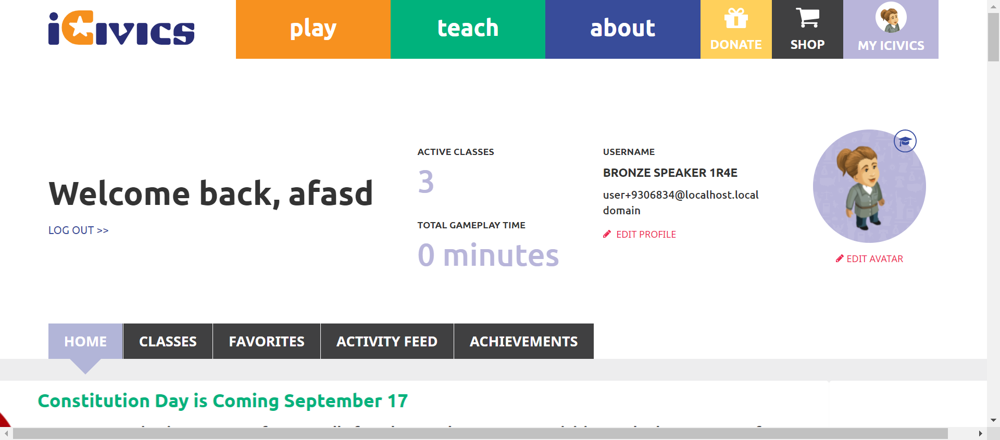 check_circle 8:40:54 PM Myicivicsbutton Verified successfully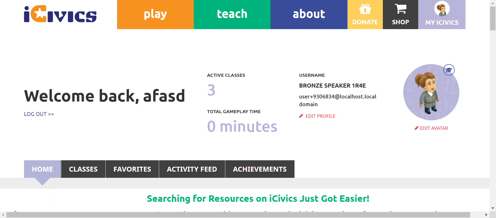 -
C4 - Are all header elements consistent with those in the mockups?(Need to take one content from each content type
Jun 28, 2022 08:44:20 PM 0h 3m 23s+271ms passStatus Timestamp Details check_circle 8:41:13 PM Blog checkbox is checked now 
check_circle 8:41:20 PM Page is display 
check_circle 8:41:20 PM Icivics logo is display 
check_circle 8:41:21 PM playbutton is display 
check_circle 8:41:21 PM Teachbutton is display 
check_circle 8:41:21 PM aboutbutton is display 
check_circle 8:41:21 PM donatebutton is display 
check_circle 8:41:22 PM Shopbutton is display 
check_circle 8:41:22 PM Signinbutton is displayed 
check_circle 8:41:28 PM curriculum checkbox is already checked 
check_circle 8:41:41 PM Page is display 
check_circle 8:41:42 PM Icivics logo is display 
check_circle 8:41:42 PM playbutton is display 
check_circle 8:41:42 PM Teachbutton is display 
check_circle 8:41:42 PM aboutbutton is display 
check_circle 8:41:43 PM donatebutton is display 
check_circle 8:41:43 PM Shopbutton is display 
check_circle 8:41:43 PM Signinbutton is displayed 
check_circle 8:41:59 PM DBQUEST checkbox is checked now 
check_circle 8:42:05 PM Page is display 
check_circle 8:42:06 PM Icivics logo is display 
check_circle 8:42:06 PM playbutton is display 
check_circle 8:42:06 PM Teachbutton is display 
check_circle 8:42:06 PM aboutbutton is display 
check_circle 8:42:07 PM donatebutton is display 
check_circle 8:42:07 PM Shopbutton is display 
check_circle 8:42:07 PM Signinbutton is displayed 
check_circle 8:42:23 PM Game checkbox is checked now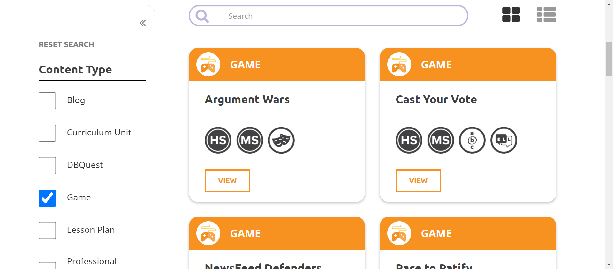 check_circle 8:42:34 PM Page is display 
check_circle 8:42:35 PM Icivics logo is display 
check_circle 8:42:35 PM playbutton is display 
check_circle 8:42:36 PM Teachbutton is display 
check_circle 8:42:36 PM aboutbutton is display 
check_circle 8:42:36 PM donatebutton is display 
check_circle 8:42:37 PM Shopbutton is display 
check_circle 8:42:37 PM Signinbutton is displayed 
check_circle 8:42:53 PM Lessonplay checkbox is checked now 
check_circle 8:43:03 PM Page is display 
check_circle 8:43:04 PM Icivics logo is display 
check_circle 8:43:04 PM playbutton is display 
check_circle 8:43:04 PM Teachbutton is display 
check_circle 8:43:05 PM aboutbutton is display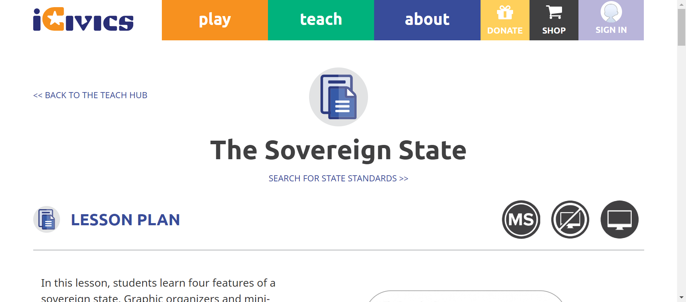 check_circle 8:43:05 PM donatebutton is display 
check_circle 8:43:05 PM Shopbutton is display 
check_circle 8:43:06 PM Signinbutton is displayed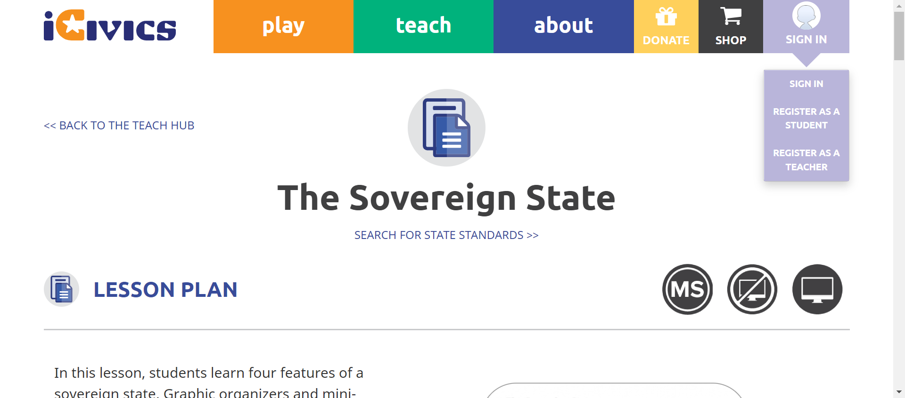 check_circle 8:43:21 PM Professional development checkbox is checked now 
check_circle 8:43:32 PM Page is display 
check_circle 8:43:33 PM Icivics logo is display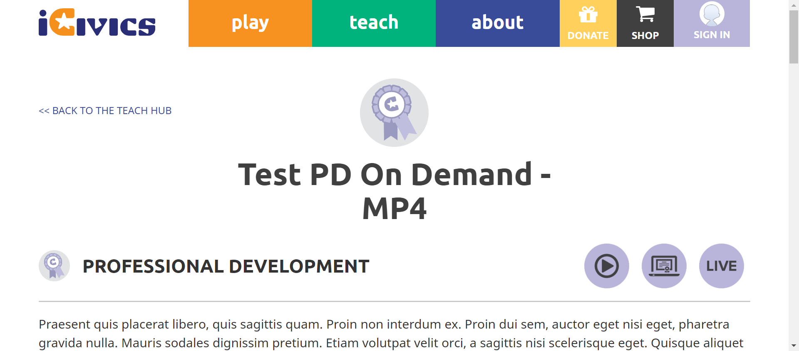 check_circle 8:43:33 PM playbutton is display 
check_circle 8:43:33 PM Teachbutton is display 
check_circle 8:43:34 PM aboutbutton is display 
check_circle 8:43:34 PM donatebutton is display 
check_circle 8:43:34 PM Shopbutton is display 
check_circle 8:43:35 PM Signinbutton is displayed 
check_circle 8:43:50 PM Video checkbox is checked now 
check_circle 8:43:55 PM Page is display 
check_circle 8:43:55 PM Icivics logo is display 
check_circle 8:43:56 PM playbutton is display 
check_circle 8:43:56 PM Teachbutton is display 
check_circle 8:43:56 PM aboutbutton is display 
check_circle 8:43:56 PM donatebutton is display 
check_circle 8:43:57 PM Shopbutton is display 
check_circle 8:43:57 PM Signinbutton is displayed 
check_circle 8:44:13 PM Webquest checkbox is checked now 
check_circle 8:44:18 PM Page is display 
check_circle 8:44:18 PM Icivics logo is display 
check_circle 8:44:18 PM playbutton is display 
check_circle 8:44:19 PM Teachbutton is display 
check_circle 8:44:19 PM aboutbutton is display 
check_circle 8:44:19 PM donatebutton is display 
check_circle 8:44:20 PM Shopbutton is display 
check_circle 8:44:20 PM Signinbutton is displayed 
-
C6 - Do all buttons have hover/click states?
Jun 28, 2022 08:46:26 PM 0h 2m 3s+819ms passStatus Timestamp Details check_circle 8:44:52 PM The mouse over by xpath : (//a[@title='Play Games'])[3] is performed. 
check_circle 8:44:55 PM Expected Tooltip and Actual Tooltip text matched successfully 
check_circle 8:44:56 PM The Element play clicked 
check_circle 8:44:59 PM The mouse over by xpath : (//a[@title='Search Our Library'])[3] is performed. 
check_circle 8:45:02 PM Expected Tooltip and Actual Tooltip text matched successfully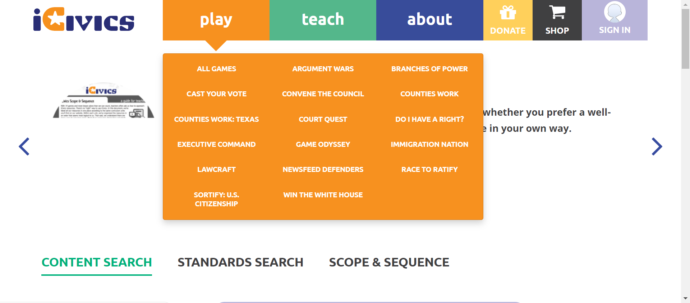 check_circle 8:45:03 PM The Element teach clicked 
check_circle 8:45:06 PM The mouse over by xpath : (//a[@title='Learn how you can financially support and fund iCivics.'])[3] is performed. 
check_circle 8:45:09 PM Expected Tooltip and Actual Tooltip text matched successfully 
check_circle 8:45:10 PM The Element about clicked 
check_circle 8:45:13 PM The mouse over by xpath : (//a[@title='Donate money to iCivics quickly and easily online.'])[2] is performed. 
check_circle 8:45:16 PM Expected Tooltip and Actual Tooltip text matched successfully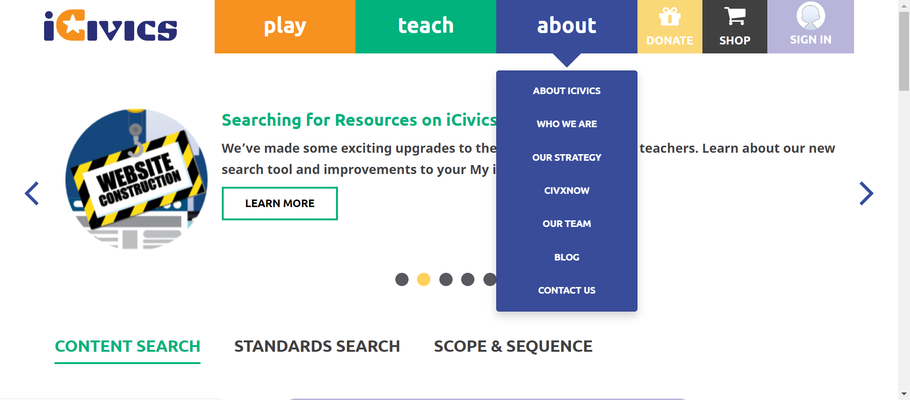 check_circle 8:45:26 PM The Element DONATE clicked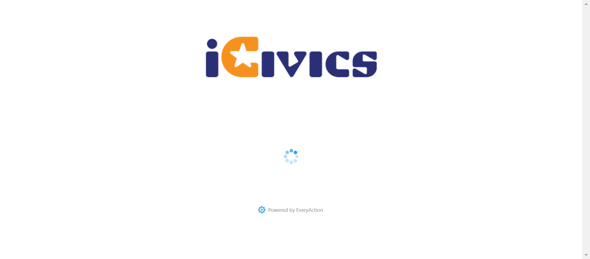 check_circle 8:45:34 PM The mouse over by xpath : (//a[@title='Shop iCivics.'])[2] is performed. 
check_circle 8:45:37 PM Expected Tooltip and Actual Tooltip text matched successfully 
check_circle 8:45:38 PM The Element SHOP clicked 
check_circle 8:45:57 PM The mouse over by xpath : (//a[@title='Sign In'])[3] is performed. 
check_circle 8:46:00 PM Expected Tooltip and Actual Tooltip text matched successfully 
check_circle 8:46:00 PM The Element SIGN IN clicked check_circle 8:46:06 PM The Element SIGN IN clicked 
check_circle 8:46:16 PM The Element LOG IN clicked 
check_circle 8:46:19 PM The mouse over by xpath : (//a[@title='MY ICIVICS'])[2] is performed. 
check_circle 8:46:26 PM Expected Tooltip and Actual Tooltip text matched successfully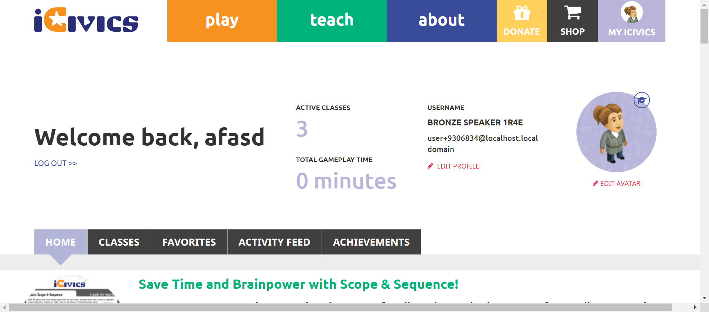 check_circle 8:46:26 PM The Element MY ICIVICS clicked 
-
C6 - Do all buttons have hover/click states?
Jun 28, 2022 08:49:17 PM 0h 2m 45s+99ms passStatus Timestamp Details check_circle 8:46:39 PM The Element SIGN IN clicked 
check_circle 8:46:42 PM The Element SIGN IN clicked 
check_circle 8:47:03 PM The Element LOG IN clicked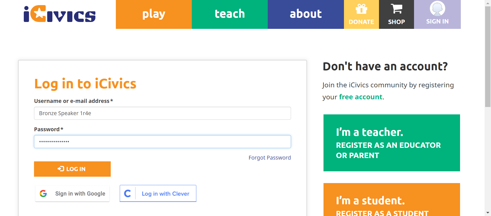 check_circle 8:47:07 PM The mouse over by xpath : (//a[@title='Play Games'])[3] is performed. 
check_circle 8:47:10 PM Expected Tooltip and Actual Tooltip text matched successfully 
check_circle 8:47:10 PM The Element play clicked 
check_circle 8:47:14 PM The mouse over by xpath : (//a[@title='Search Our Library'])[3] is performed.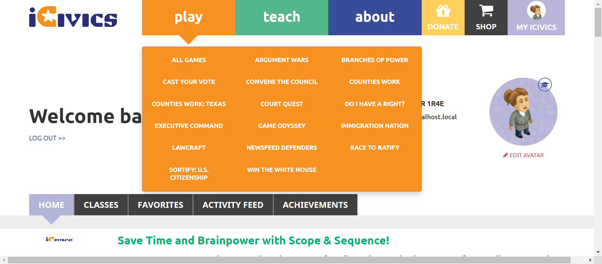 check_circle 8:47:17 PM Expected Tooltip and Actual Tooltip text matched successfully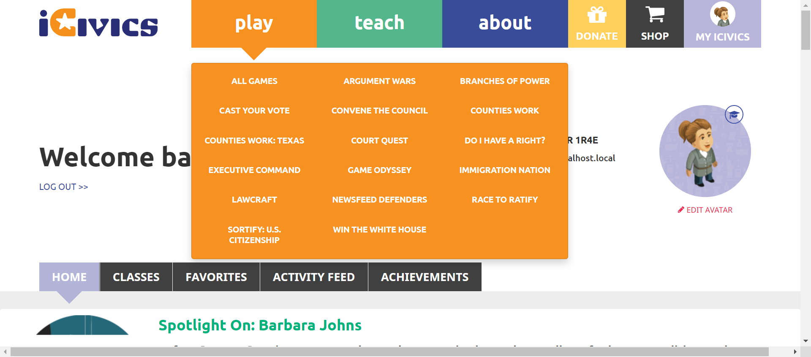 check_circle 8:47:17 PM The Element teach clicked 
check_circle 8:47:21 PM The mouse over by xpath : (//a[@title='Learn how you can financially support and fund iCivics.'])[3] is performed. 
check_circle 8:47:24 PM Expected Tooltip and Actual Tooltip text matched successfully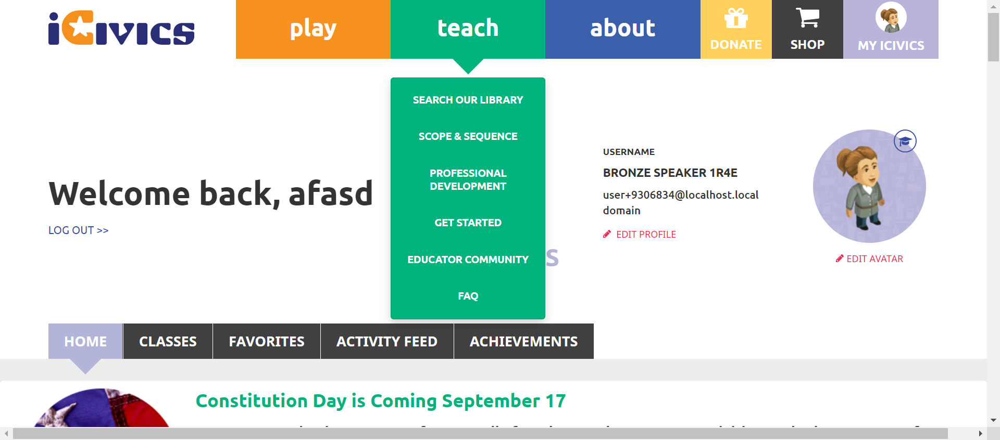 check_circle 8:47:25 PM The Element about clicked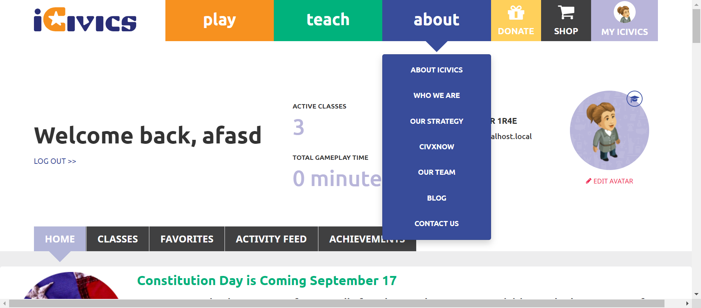 check_circle 8:47:28 PM The mouse over by xpath : (//a[@title='Donate money to iCivics quickly and easily online.'])[2] is performed. 
check_circle 8:47:32 PM Expected Tooltip and Actual Tooltip text matched successfully 
check_circle 8:47:48 PM The Element DONATE clicked 
check_circle 8:48:20 PM The mouse over by xpath : (//a[@title='Shop iCivics'])[2] is performed. 
check_circle 8:48:23 PM Expected Tooltip and Actual Tooltip text matched successfully 
check_circle 8:48:33 PM The Element SHOP clicked check_circle 8:49:10 PM The mouse over by xpath : (//a[@title='MY ICIVICS'])[2] is performed. 
check_circle 8:49:16 PM Expected Tooltip and Actual Tooltip text matched successfully 
check_circle 8:49:17 PM The Element MY ICIVICS clicked 
-
C7 - Does the header resize responsively at different resolutions?
Jun 28, 2022 08:50:25 PM 0h 1m 2s+992ms passStatus Timestamp Details check_circle 8:49:57 PM Ipad potrait resize is successfull 
check_circle 8:49:57 PM Hamburger Icon is displayed successfully 
check_circle 8:49:57 PM cardtitle is displayed successfully 
check_circle 8:50:00 PM Ipad landscape resize is successfull 
check_circle 8:50:01 PM cardtitle is displayed successfully 
check_circle 8:50:04 PM Iphone potrait resize is successfull 
check_circle 8:50:04 PM Hamburger Icon is displayed successfully 
check_circle 8:50:08 PM Iphone landscape resize is successfull 
check_circle 8:50:08 PM Hamburger Icon is displayed successfully 
check_circle 8:50:12 PM Hamburger Icon is displayed successfully 
check_circle 8:50:15 PM Hamburger Icon is displayed successfully 
check_circle 8:50:16 PM cardtitle is displayed successfully 
check_circle 8:50:16 PM cardtitle is displayed successfully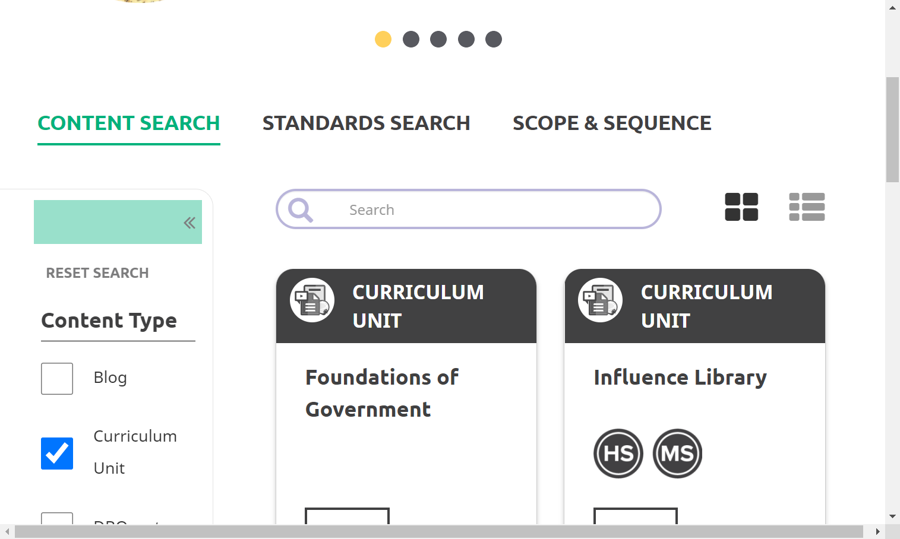 check_circle 8:50:17 PM Ipad landscape resize is successfull 
check_circle 8:50:20 PM cardtitle is displayed successfully 
check_circle 8:50:20 PM Iphone potrait resize is successfull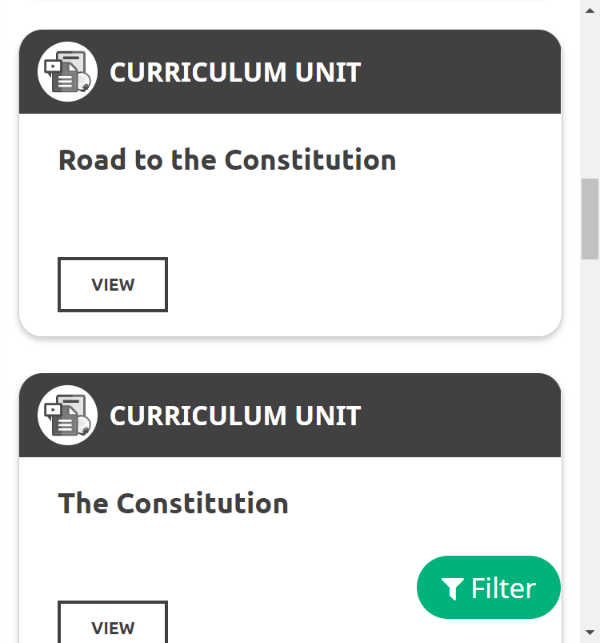 check_circle 8:50:24 PM cardtitle is displayed successfully 
check_circle 8:50:24 PM Iphone landscape resize is successfull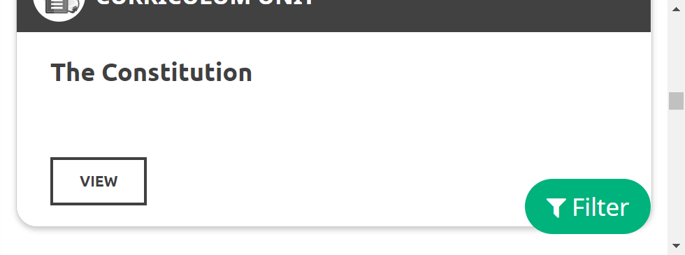 check_circle 8:50:24 PM cardtitle is displayed successfully 
check_circle 8:50:24 PM Samsung Galaxy potrait resize is successfull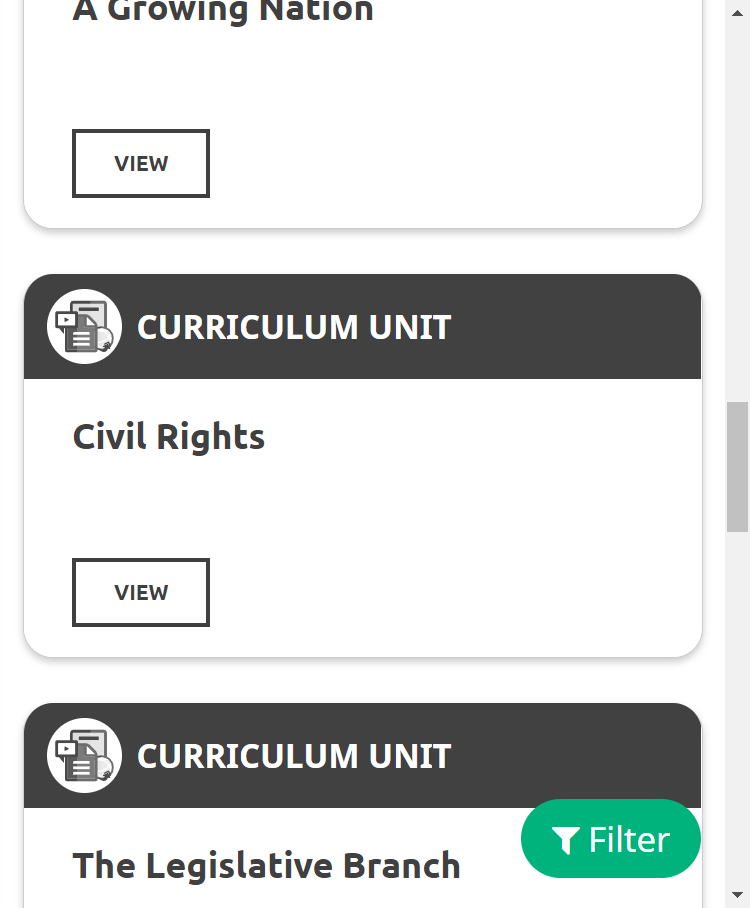 check_circle 8:50:25 PM cardtitle is displayed successfully 
check_circle 8:50:25 PM Samsung Galaxy landscape resize is successfull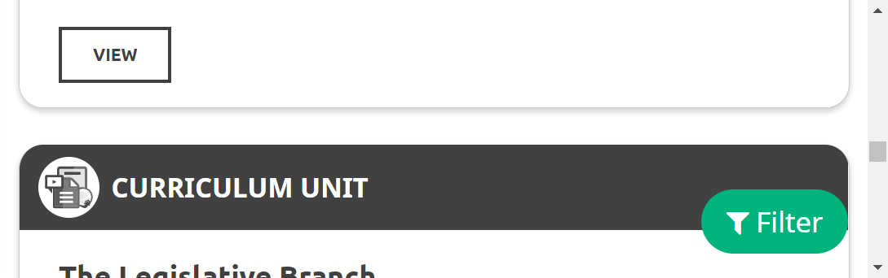
-
-
HomepageHeader Jun 28, 2022 08:50:26 PM passJun 28, 2022 08:50:26 PM Jun 28, 2022 08:52:06 PM 0h 1m 40s+451ms
-
C1 - Do you see the iCivics Logo in the upper left?
Jun 28, 2022 08:50:40 PM 0h 0m 12s+239ms passStatus Timestamp Details check_circle 8:50:34 PM URL Verified successfully 
check_circle 8:50:35 PM Icivics logo is displayed 
check_circle 8:50:36 PM The Element clicked 
check_circle 8:50:40 PM Page reloads successfully 
-
C2 - While on the iCivics Home Page, do you see buttons for Donate, Shop, and My iCivics in the navigation bar?
Jun 28, 2022 08:51:11 PM 0h 0m 28s+890ms passStatus Timestamp Details check_circle 8:50:49 PM URL Verified successfully 
check_circle 8:50:50 PM Donatebutton is display 
check_circle 8:50:51 PM Shopbutton is dislay 
check_circle 8:50:52 PM Signin button is display 
check_circle 8:50:53 PM The Element SIGN IN clicked 
check_circle 8:50:56 PM The Element SIGN IN clicked 
check_circle 8:50:57 PM The Element LOG IN clicked 
check_circle 8:51:11 PM Myicivicsbutton is display 
-
C2 - While on the iCivics Home Page, do you see buttons for Donate, Shop, and My iCivics in the navigation bar?
Jun 28, 2022 08:51:49 PM 0h 0m 35s+353ms passStatus Timestamp Details check_circle 8:51:22 PM The Element SIGN IN clicked 
check_circle 8:51:24 PM The Element SIGN IN clicked 
check_circle 8:51:45 PM The Element LOG IN clicked check_circle 8:51:49 PM Donatebutton is display after login 
check_circle 8:51:49 PM Shopbutton is display after login 
check_circle 8:51:49 PM Myicivicsbutton is display after login 
-
C1538 - Does the donation popup NOT show?
Jun 28, 2022 08:52:06 PM 0h 0m 14s+59ms passStatus Timestamp Details check_circle 8:51:59 PM URL Verified successfully 
check_circle 8:52:06 PM The Element DONATE clicked 
check_circle 8:52:06 PM Donation Popup is not present 
-
-
HomepageHeaderteach2 Jun 28, 2022 08:52:07 PM failJun 28, 2022 08:52:07 PM Jun 28, 2022 08:53:54 PM 0h 1m 47s+356ms
-
C19 - If you are viewing one of the pages in the Teach submenu, is that page underlined in the submenu?
Jun 28, 2022 08:53:54 PM 0h 1m 45s+89ms failStatus Timestamp Details check_circle 8:52:37 PM Teachsubmenu is display 
check_circle 8:52:46 PM The Element teach clicked 
check_circle 8:52:53 PM Selected page is underlined and non selected page is not underlined 
check_circle 8:53:01 PM The Element teach clicked 
cancel 8:53:04 PM Selected page is not underlined 
check_circle 8:53:10 PM The Element teach clicked 
check_circle 8:53:14 PM Selected page is underlined and non selected page is not underlined 
check_circle 8:53:29 PM The Element teach clicked 
check_circle 8:53:33 PM Selected page is underlined and non selected page is not underlined 
check_circle 8:53:36 PM The Element teach clicked 
check_circle 8:53:40 PM The mouse over by xpath : (//a[text()='Educator Community'])[2] is performed. 
check_circle 8:53:45 PM Selected page is underlined and non selected page is not underlined 
check_circle 8:53:48 PM The mouse over by xpath : (//a[text()='FAQ'])[2] is performed.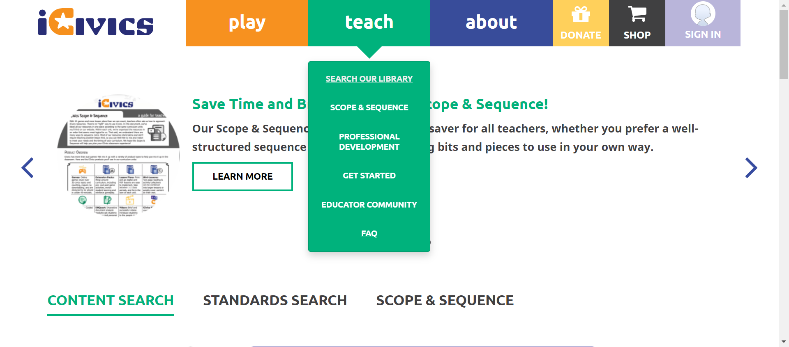 check_circle 8:53:54 PM Selected page is underlined and non selected page is not underlined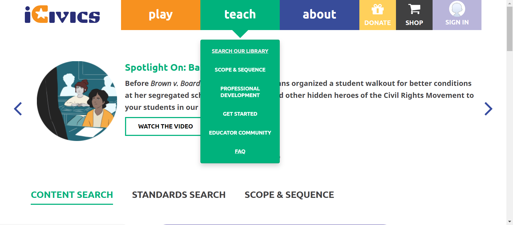 check_circle 8:53:54 PM The Element teach clicked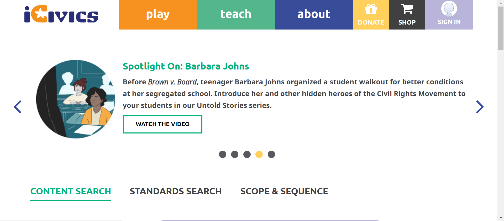 check_circle 8:53:54 PM Teach submenu is close on clicking again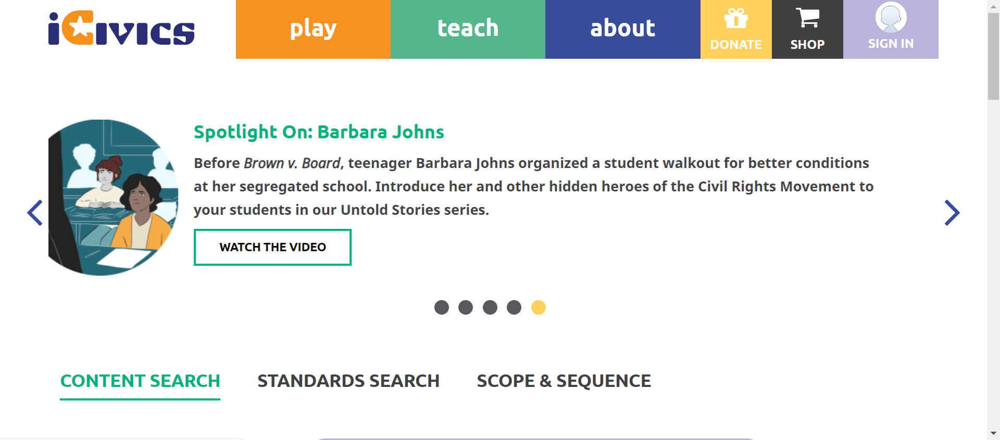
-
-
HomepageHeaderteach Jun 28, 2022 08:53:55 PM passJun 28, 2022 08:53:55 PM Jun 28, 2022 08:55:55 PM 0h 2m 0s+160ms
-
C15 - When you select Teach, does a submenu open below the Teach button?
Jun 28, 2022 08:54:02 PM 0h 0m 5s+636ms passStatus Timestamp Details check_circle 8:54:02 PM The Element teach clicked 
check_circle 8:54:02 PM Teachsubmenu is display 
-
C16 - Do you see links to Search Our Library, Scope and Sequence, Professional Development, Get Started, Educatory Community, and FAQ in the submenu?
Jun 28, 2022 08:54:12 PM 0h 0m 7s+681ms passStatus Timestamp Details check_circle 8:54:09 PM The Element teach clicked 
check_circle 8:54:09 PM Teachsubmenu is display 
check_circle 8:54:09 PM Teachbutton submenu count is 6 
check_circle 8:54:10 PM Teachbutton submenu is SEARCH OUR LIBRARY 
check_circle 8:54:10 PM Teachbutton submenu is SCOPE & SEQUENCE 
check_circle 8:54:11 PM Teachbutton submenu is PROFESSIONAL DEVELOPMENT 
check_circle 8:54:11 PM Teachbutton submenu is GET STARTED 
check_circle 8:54:11 PM Teachbutton submenu is EDUCATOR COMMUNITY 
check_circle 8:54:12 PM Teachbutton submenu is FAQ 
-
C17 - When you select a link in the submenu, are you navigated to the appropriate page?
Jun 28, 2022 08:55:49 PM 0h 1m 33s+958ms passStatus Timestamp Details check_circle 8:54:21 PM The mouse over by xpath : (//a[@title='Search Our Library'])[3] is performed. 
check_circle 8:54:21 PM The element [[ChromeDriver: chrome on WINDOWS (d763c0665950d14678e30055a4d6ec60)] -> xpath: (//li[@class='first search our library']/a)[2]] is visible 
check_circle 8:54:21 PM The expected text contains the actual SEARCH OUR LIBRARY 
check_circle 8:54:42 PM The Element SEARCH OUR LIBRARY clicked 
check_circle 8:54:42 PM The expected https://staging.d9.icivics.org/teachers url as same as the https://staging.d9.icivics.org/teachers actual url. 
check_circle 8:54:42 PM The expected text contains the actual CONTENT SEARCH 
check_circle 8:54:43 PM The mouse over by xpath : (//a[@title='Search Our Library'])[3] is performed. 
check_circle 8:54:43 PM The element [[ChromeDriver: chrome on WINDOWS (d763c0665950d14678e30055a4d6ec60)] -> xpath: (//a[@title='Scope and Sequence'])[2]] is visible 
check_circle 8:54:43 PM The expected text contains the actual SCOPE & SEQUENCE 
check_circle 8:54:47 PM The Element SCOPE & SEQUENCE clicked 
check_circle 8:54:47 PM The expected https://staging.d9.icivics.org/user/login?destination=/viewpdf%3Fpath%3D/sites/default/files/Scope%2520%2526%2520Sequence%25205.13.pdf url as same as the https://staging.d9.icivics.org/user/login?destination=/viewpdf%3Fpath%3D/sites/default/files/Scope%2520%2526%2520Sequence%25205.13.pdf actual url. 
check_circle 8:54:47 PM The expected text contains the actual Log in to iCivics 
check_circle 8:54:48 PM The mouse over by xpath : (//a[@title='Search Our Library'])[3] is performed.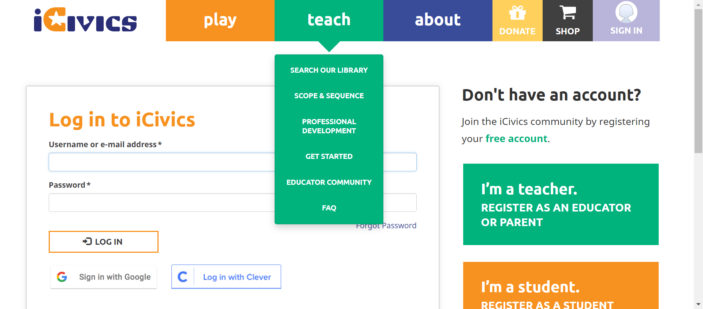 check_circle 8:54:48 PM The element [[ChromeDriver: chrome on WINDOWS (d763c0665950d14678e30055a4d6ec60)] -> xpath: (//li[@class='professional development']//a)[2]] is visible 
check_circle 8:54:48 PM The expected text contains the actual PROFESSIONAL DEVELOPMENT 
check_circle 8:55:08 PM The Element PROFESSIONAL DEVELOPMENT clicked 
check_circle 8:55:08 PM The expected https://staging.d9.icivics.org/products/professional-development url as same as the https://staging.d9.icivics.org/products/professional-development actual url. 
check_circle 8:55:08 PM The expected text contains the actual Professional Development 
check_circle 8:55:09 PM The mouse over by xpath : (//a[@title='Search Our Library'])[3] is performed. 
check_circle 8:55:09 PM The element [[ChromeDriver: chrome on WINDOWS (d763c0665950d14678e30055a4d6ec60)] -> xpath: (//li[@class='get started']//a)[2]] is visible 
check_circle 8:55:09 PM The expected text contains the actual GET STARTED 
check_circle 8:55:30 PM The Element GET STARTED clicked 
check_circle 8:55:31 PM The expected https://staging.d9.icivics.org/getstarted url as same as the https://staging.d9.icivics.org/getstarted actual url. 
check_circle 8:55:31 PM The expected text contains the actual Welcome to iCivics! 
check_circle 8:55:31 PM The mouse over by xpath : (//a[@title='Search Our Library'])[3] is performed. 
check_circle 8:55:31 PM The element [[ChromeDriver: chrome on WINDOWS (d763c0665950d14678e30055a4d6ec60)] -> xpath: (//li[@class='educator community']//a)[2]] is visible 
check_circle 8:55:32 PM The expected text contains the actual EDUCATOR COMMUNITY 
check_circle 8:55:38 PM The Element EDUCATOR COMMUNITY clicked 
check_circle 8:55:44 PM The mouse over by xpath : (//a[@title='Search Our Library'])[3] is performed. 
check_circle 8:55:44 PM The element [[ChromeDriver: chrome on WINDOWS (d763c0665950d14678e30055a4d6ec60)] -> xpath: (//li[@class='last faq']//a)[2]] is visible 
check_circle 8:55:44 PM The expected text contains the actual FAQ 
check_circle 8:55:48 PM The Element FAQ clicked 
check_circle 8:55:48 PM The expected https://icivics.zendesk.com/hc/en-us url as same as the https://icivics.zendesk.com/hc/en-us actual url. 
check_circle 8:55:48 PM The expected text contains the actual Getting Started 
check_circle 8:55:49 PM All links in the teach dropdown is verified sucessfully 
-
C20 - When you select Teach again while the submenu is open, does the submenu close?
Jun 28, 2022 08:55:55 PM 0h 0m 5s+23ms passStatus Timestamp Details check_circle 8:55:54 PM The Element teach clicked 
check_circle 8:55:54 PM Teachsubmenu is display 
check_circle 8:55:55 PM The Element teach clicked 
check_circle 8:55:55 PM Teach submenu is close on clicking again 
-
-
HomepageHeaderAbout Jun 28, 2022 08:55:55 PM passJun 28, 2022 08:55:55 PM Jun 28, 2022 09:00:55 PM 0h 4m 59s+304ms
-
C22 - When you select About, does a submenu open below the About button?
Jun 28, 2022 08:56:52 PM 0h 0m 55s+181ms passStatus Timestamp Details check_circle 8:56:24 PM The Element about clicked 
check_circle 8:56:24 PM Aboutsubmenu display successfully 
check_circle 8:56:48 PM The Element clicked check_circle 8:56:52 PM For Homepage aboutbutton is not present 
-
C23 - Do you see links to About iCivics, Who We Are, Our Strategy, CIVXNOW, Our Team, Blog, and Contact Us in the submenu?
Jun 28, 2022 08:57:22 PM 0h 0m 28s+653ms passStatus Timestamp Details check_circle 8:57:20 PM The Element about clicked 
check_circle 8:57:20 PM Aboutsubmenu display successfully 
check_circle 8:57:20 PM Aboutbutton submenu count is 7 
check_circle 8:57:21 PM Aboutbutton submenu is ABOUT ICIVICS 
check_circle 8:57:21 PM Aboutbutton submenu is WHO WE ARE 
check_circle 8:57:21 PM Aboutbutton submenu is OUR STRATEGY 
check_circle 8:57:21 PM Aboutbutton submenu is CIVXNOW 
check_circle 8:57:21 PM Aboutbutton submenu is OUR TEAM 
check_circle 8:57:22 PM Aboutbutton submenu is BLOG 
check_circle 8:57:22 PM Aboutbutton submenu is CONTACT US 
-
C24 - When you select a link in the submenu, are you navigated to the appropriate page?
Jun 28, 2022 09:00:24 PM 0h 3m 1s+176ms passStatus Timestamp Details check_circle 8:57:53 PM The mouse over by xpath : (//a[@href='/about'])[3] is performed. 
check_circle 8:57:54 PM The element [[ChromeDriver: chrome on WINDOWS (c3149c6bad1639ed8c5f2400f9ded5f7)] -> xpath: (//li[@class='first about icivics']/a)[2]] is visible 
check_circle 8:57:54 PM The expected text contains the actual ABOUT ICIVICS 
check_circle 8:58:14 PM The Element ABOUT ICIVICS clicked 
check_circle 8:58:15 PM The expected https://staging.d9.icivics.org/about url as same as the https://staging.d9.icivics.org/about actual url. 
check_circle 8:58:15 PM The expected text contains the actual iCivics reimagines civic education for American democracy 
check_circle 8:58:15 PM The mouse over by xpath : (//a[@href='/about'])[3] is performed. 
check_circle 8:58:16 PM The element [[ChromeDriver: chrome on WINDOWS (c3149c6bad1639ed8c5f2400f9ded5f7)] -> xpath: (//li[contains(@class,'who we')]//a)[2]] is visible 
check_circle 8:58:16 PM The expected text contains the actual WHO WE ARE 
check_circle 8:58:43 PM The Element WHO WE ARE clicked 
check_circle 8:58:43 PM The expected https://staging.icivics.org/who-we-are url as same as the https://staging.icivics.org/who-we-are actual url. 
check_circle 8:58:46 PM The mouse over by xpath : (//a[@href='/about'])[3] is performed. 
check_circle 8:58:46 PM The element [[ChromeDriver: chrome on WINDOWS (c3149c6bad1639ed8c5f2400f9ded5f7)] -> xpath: (//li[@class='our strategy']//a)[2]] is visible 
check_circle 8:58:46 PM The expected text contains the actual OUR STRATEGY 
check_circle 8:59:07 PM The Element OUR STRATEGY clicked 
check_circle 8:59:07 PM The expected https://staging.icivics.org/our-strategy url as same as the https://staging.icivics.org/our-strategy actual url. 
check_circle 8:59:11 PM The mouse over by xpath : (//a[@href='/about'])[3] is performed. 
check_circle 8:59:11 PM The element [[ChromeDriver: chrome on WINDOWS (c3149c6bad1639ed8c5f2400f9ded5f7)] -> xpath: (//li[@class='civxnow']//a)[2]] is visible 
check_circle 8:59:11 PM The expected text contains the actual CIVXNOW 
check_circle 8:59:23 PM The Element CIVXNOW clicked 
check_circle 8:59:24 PM The expected https://civxnow.org/ url as same as the https://civxnow.org/ actual url. 
check_circle 8:59:27 PM The mouse over by xpath : (//a[@href='/about'])[3] is performed. 
check_circle 8:59:27 PM The element [[ChromeDriver: chrome on WINDOWS (c3149c6bad1639ed8c5f2400f9ded5f7)] -> xpath: (//a[@href='/our-team'])[2]] is visible 
check_circle 8:59:27 PM The expected text contains the actual OUR TEAM 
check_circle 8:59:48 PM The Element OUR TEAM clicked 
check_circle 8:59:48 PM The expected https://staging.icivics.org/our-team url as same as the https://staging.icivics.org/our-team actual url. 
check_circle 8:59:54 PM The mouse over by xpath : (//a[@href='/about'])[3] is performed. 
check_circle 8:59:54 PM The element [[ChromeDriver: chrome on WINDOWS (c3149c6bad1639ed8c5f2400f9ded5f7)] -> xpath: (//li[@class='blog']//a)[2]] is visible 
check_circle 8:59:54 PM The expected text contains the actual BLOG 
check_circle 9:00:15 PM The Element BLOG clicked 
check_circle 9:00:15 PM The expected https://staging.d9.icivics.org/news?keys=&tid%5B1%5D=1 url as same as the https://staging.d9.icivics.org/news?keys=&tid%5B1%5D=1 actual url. 
check_circle 9:00:15 PM The expected text contains the actual iCivics Blog and News 
check_circle 9:00:18 PM The mouse over by xpath : (//a[@href='/about'])[3] is performed. 
check_circle 9:00:18 PM The element [[ChromeDriver: chrome on WINDOWS (c3149c6bad1639ed8c5f2400f9ded5f7)] -> xpath: (//a[@href='/contact'])[2]] is visible 
check_circle 9:00:18 PM The expected text contains the actual CONTACT US 
check_circle 9:00:22 PM The Element CONTACT US clicked 
check_circle 9:00:22 PM The expected https://icivics.zendesk.com/hc/en-us/requests/new url as same as the https://icivics.zendesk.com/hc/en-us/requests/new actual url. 
check_circle 9:00:24 PM All links in the About dropdown is verified sucessfully 
-
C27 - When you select About again while the submenu is open, does the submenu close?
Jun 28, 2022 09:00:55 PM 0h 0m 28s+702ms passStatus Timestamp Details check_circle 9:00:54 PM The Element about clicked 
check_circle 9:00:54 PM Aboutsubmenu display successfully 
check_circle 9:00:54 PM The Element about clicked 
check_circle 9:00:55 PM About button is clicked again and about menu is close 
-
-
HomepageHeaderplay Jun 28, 2022 09:00:58 PM passJun 28, 2022 09:00:58 PM Jun 28, 2022 09:14:11 PM 0h 13m 13s+197ms
-
C8 - When you select Play, does a submenu open below the Play button?
Jun 28, 2022 09:01:05 PM 0h 0m 6s+316ms passStatus Timestamp Details check_circle 9:01:05 PM playbutton submenu is display 
-
C9- Do you see links to All Games, as well as each individual game in the submenu?
Jun 28, 2022 09:01:43 PM 0h 0m 36s+207ms passStatus Timestamp Details check_circle 9:01:13 PM playbutton submenu is display 
check_circle 9:01:43 PM playbutton submenu count is 0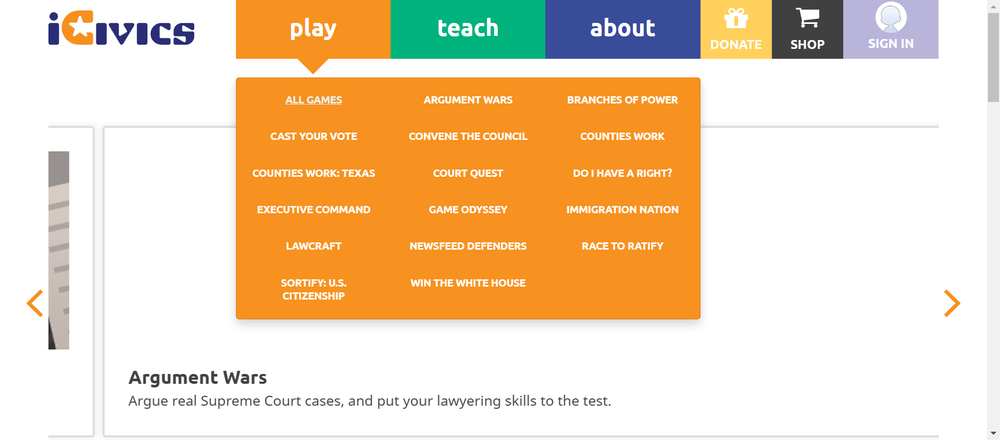 -
C10- When you select a link in the submenu, are you navigated to the appropriate page?
Jun 28, 2022 09:08:46 PM 0h 7m 0s+852ms passStatus Timestamp Details check_circle 9:01:52 PM The mouse over by xpath : (//*[@title='Play Games'])[3] is performed. 
check_circle 9:01:52 PM The element [[ChromeDriver: chrome on WINDOWS (a51bd590ffe68929fbfa2b27294daabc)] -> xpath: (//li[contains(@class,'first all')]//a)[2]] is visible 
check_circle 9:01:53 PM The expected text contains the actual ALL GAMES 
check_circle 9:01:54 PM The Element ALL GAMES clicked 
check_circle 9:01:54 PM The expected https://staging.d9.icivics.org/games url as same as the https://staging.d9.icivics.org/games actual url. 
check_circle 9:01:55 PM The mouse over by xpath : (//*[@title='Play Games'])[3] is performed. 
check_circle 9:01:55 PM The element [[ChromeDriver: chrome on WINDOWS (a51bd590ffe68929fbfa2b27294daabc)] -> xpath: (//li[contains(@class,'cast')]//a)[2]] is visible 
check_circle 9:01:55 PM The expected text contains the actual CAST YOUR VOTE 
check_circle 9:02:14 PM The Element CAST YOUR VOTE clicked 
check_circle 9:02:14 PM The expected https://staging.d9.icivics.org/games/cast-your-vote url as same as the https://staging.d9.icivics.org/games/cast-your-vote actual url. 
check_circle 9:02:15 PM The expected text contains the actual Cast Your Vote 
check_circle 9:02:15 PM The mouse over by xpath : (//*[@title='Play Games'])[3] is performed. 
check_circle 9:02:16 PM The element [[ChromeDriver: chrome on WINDOWS (a51bd590ffe68929fbfa2b27294daabc)] -> xpath: (//li[@class='counties work: texas']/a)[2]] is visible 
check_circle 9:02:16 PM The expected text contains the actual COUNTIES WORK: TEXAS 
check_circle 9:02:46 PM The Element COUNTIES WORK: TEXAS clicked 
check_circle 9:02:46 PM The expected https://staging.d9.icivics.org/games/counties-work-texas url as same as the https://staging.d9.icivics.org/games/counties-work-texas actual url. 
check_circle 9:02:46 PM The expected text contains the actual Counties Work: Texas 
check_circle 9:02:47 PM The mouse over by xpath : (//*[@title='Play Games'])[3] is performed. 
check_circle 9:02:47 PM The element [[ChromeDriver: chrome on WINDOWS (a51bd590ffe68929fbfa2b27294daabc)] -> xpath: (//li[@class='executive command']/a)[2]] is visible 
check_circle 9:02:47 PM The expected text contains the actual EXECUTIVE COMMAND 
check_circle 9:03:13 PM The Element EXECUTIVE COMMAND clicked 
check_circle 9:03:13 PM The expected https://staging.d9.icivics.org/games/executive-command url as same as the https://staging.d9.icivics.org/games/executive-command actual url. 
check_circle 9:03:14 PM The expected text contains the actual Executive Command 
check_circle 9:03:14 PM The mouse over by xpath : (//*[@title='Play Games'])[3] is performed. 
check_circle 9:03:14 PM The element [[ChromeDriver: chrome on WINDOWS (a51bd590ffe68929fbfa2b27294daabc)] -> xpath: (//li[@class='lawcraft']/a)[2]] is visible 
check_circle 9:03:15 PM The expected text contains the actual LAWCRAFT 
check_circle 9:03:42 PM The Element LAWCRAFT clicked 
check_circle 9:03:43 PM The expected https://staging.d9.icivics.org/games/lawcraft url as same as the https://staging.d9.icivics.org/games/lawcraft actual url. 
check_circle 9:03:43 PM The expected text contains the actual LawCraft 
check_circle 9:03:44 PM The mouse over by xpath : (//*[@title='Play Games'])[3] is performed. 
check_circle 9:03:44 PM The element [[ChromeDriver: chrome on WINDOWS (a51bd590ffe68929fbfa2b27294daabc)] -> xpath: (//li[@class='sortify: u.s. citizenship']/a)[2]] is visible 
check_circle 9:03:44 PM The expected text contains the actual SORTIFY: U.S. CITIZENSHIP 
check_circle 9:04:14 PM The Element SORTIFY: U.S. CITIZENSHIP clicked 
check_circle 9:04:14 PM The expected https://staging.d9.icivics.org/games/sortify-us-citizenship url as same as the https://staging.d9.icivics.org/games/sortify-us-citizenship actual url. 
check_circle 9:04:14 PM The expected text contains the actual Sortify: U.S. Citizenship 
check_circle 9:04:15 PM The mouse over by xpath : (//*[@title='Play Games'])[3] is performed. 
check_circle 9:04:15 PM The element [[ChromeDriver: chrome on WINDOWS (a51bd590ffe68929fbfa2b27294daabc)] -> xpath: (//li[@class='argument wars']/a)[2]] is visible 
check_circle 9:04:15 PM The expected text contains the actual ARGUMENT WARS 
check_circle 9:04:39 PM The Element ARGUMENT WARS clicked 
check_circle 9:04:40 PM The expected https://staging.d9.icivics.org/games/argument-wars url as same as the https://staging.d9.icivics.org/games/argument-wars actual url. 
check_circle 9:04:40 PM The expected text contains the actual Argument Wars 
check_circle 9:04:41 PM The mouse over by xpath : (//*[@title='Play Games'])[3] is performed. 
check_circle 9:04:41 PM The element [[ChromeDriver: chrome on WINDOWS (a51bd590ffe68929fbfa2b27294daabc)] -> xpath: (//li[@class='convene the council']/a)[2]] is visible 
check_circle 9:04:41 PM The expected text contains the actual CONVENE THE COUNCIL 
check_circle 9:05:05 PM The Element CONVENE THE COUNCIL clicked 
check_circle 9:05:06 PM The expected https://staging.d9.icivics.org/games/convene-council url as same as the https://staging.d9.icivics.org/games/convene-council actual url. 
check_circle 9:05:06 PM The expected text contains the actual Convene the Council 
check_circle 9:05:07 PM The mouse over by xpath : (//*[@title='Play Games'])[3] is performed. 
check_circle 9:05:07 PM The element [[ChromeDriver: chrome on WINDOWS (a51bd590ffe68929fbfa2b27294daabc)] -> xpath: (//li[@class='court quest']/a)[2]] is visible 
check_circle 9:05:07 PM The expected text contains the actual COURT QUEST 
check_circle 9:05:30 PM The Element COURT QUEST clicked 
check_circle 9:05:31 PM The expected https://staging.d9.icivics.org/games/court-quest url as same as the https://staging.d9.icivics.org/games/court-quest actual url. 
check_circle 9:05:31 PM The expected text contains the actual Court Quest 
check_circle 9:05:32 PM The mouse over by xpath : (//*[@title='Play Games'])[3] is performed. 
check_circle 9:05:32 PM The element [[ChromeDriver: chrome on WINDOWS (a51bd590ffe68929fbfa2b27294daabc)] -> xpath: (//li[@class='game odyssey']/a)[2]] is visible 
check_circle 9:05:32 PM The expected text contains the actual GAME ODYSSEY 
check_circle 9:05:58 PM The Element GAME ODYSSEY clicked 
check_circle 9:05:59 PM The expected https://staging.d9.icivics.org/game-odyssey url as same as the https://staging.d9.icivics.org/game-odyssey actual url. 
check_circle 9:05:59 PM The expected text contains the actual iCivics Game Odyssey 
check_circle 9:06:04 PM The mouse over by xpath : (//*[@title='Play Games'])[3] is performed. 
check_circle 9:06:04 PM The element [[ChromeDriver: chrome on WINDOWS (a51bd590ffe68929fbfa2b27294daabc)] -> xpath: (//li[@class='newsfeed defenders']//a)[2]] is visible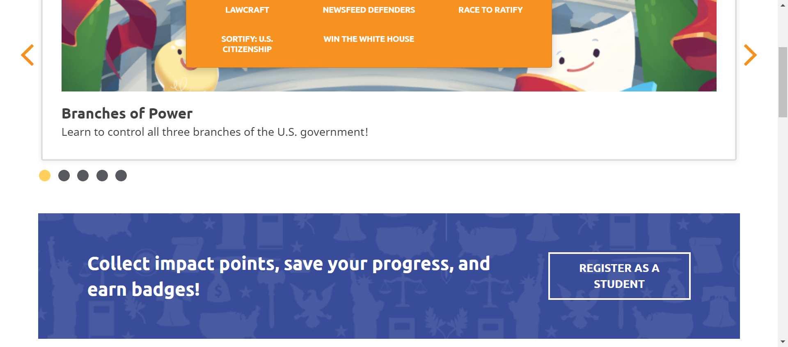 check_circle 9:06:04 PM The expected text contains the actual NEWSFEED DEFENDERS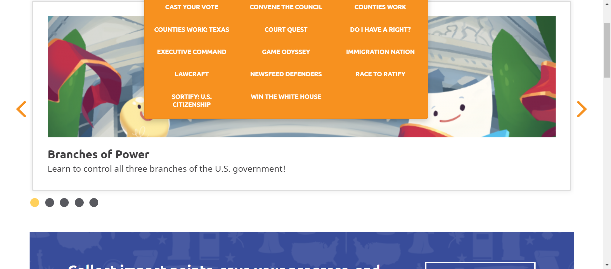 check_circle 9:06:22 PM The Element NEWSFEED DEFENDERS clicked 
check_circle 9:06:22 PM The expected https://staging.d9.icivics.org/games/newsfeed-defenders url as same as the https://staging.d9.icivics.org/games/newsfeed-defenders actual url. 
check_circle 9:06:22 PM The expected text contains the actual NewsFeed Defenders 
check_circle 9:06:23 PM The mouse over by xpath : (//*[@title='Play Games'])[3] is performed. 
check_circle 9:06:23 PM The element [[ChromeDriver: chrome on WINDOWS (a51bd590ffe68929fbfa2b27294daabc)] -> xpath: (//li[contains(@class,'last win')]//a)[2]] is visible 
check_circle 9:06:23 PM The expected text contains the actual WIN THE WHITE HOUSE 
check_circle 9:06:51 PM The Element WIN THE WHITE HOUSE clicked 
check_circle 9:06:51 PM The expected https://staging.d9.icivics.org/games/win-white-house url as same as the https://staging.d9.icivics.org/games/win-white-house actual url. 
check_circle 9:06:51 PM The expected text contains the actual Win the White House 
check_circle 9:06:52 PM The mouse over by xpath : (//*[@title='Play Games'])[3] is performed. 
check_circle 9:06:52 PM The element [[ChromeDriver: chrome on WINDOWS (a51bd590ffe68929fbfa2b27294daabc)] -> xpath: (//li[@class='branches of power']/a)[2]] is visible 
check_circle 9:06:52 PM The expected text contains the actual BRANCHES OF POWER 
check_circle 9:07:17 PM The Element BRANCHES OF POWER clicked 
check_circle 9:07:17 PM The expected https://staging.d9.icivics.org/games/branches-power url as same as the https://staging.d9.icivics.org/games/branches-power actual url. 
check_circle 9:07:18 PM The expected text contains the actual Branches of Power 
check_circle 9:07:18 PM The mouse over by xpath : (//*[@title='Play Games'])[3] is performed. 
check_circle 9:07:18 PM The element [[ChromeDriver: chrome on WINDOWS (a51bd590ffe68929fbfa2b27294daabc)] -> xpath: (//li[@class='counties work']/a)[2]] is visible 
check_circle 9:07:19 PM The expected text contains the actual COUNTIES WORK 
check_circle 9:07:26 PM The Element COUNTIES WORK clicked 
check_circle 9:07:26 PM The expected https://staging.d9.icivics.org/games/counties-work url as same as the https://staging.d9.icivics.org/games/counties-work actual url. 
check_circle 9:07:26 PM The expected text contains the actual Counties Work 
check_circle 9:07:27 PM The mouse over by xpath : (//*[@title='Play Games'])[3] is performed. 
check_circle 9:07:27 PM The element [[ChromeDriver: chrome on WINDOWS (a51bd590ffe68929fbfa2b27294daabc)] -> xpath: (//li[@class='do i have a right?'])[2]] is visible 
check_circle 9:07:27 PM The expected text contains the actual DO I HAVE A RIGHT? 
check_circle 9:07:47 PM The Element DO I HAVE A RIGHT? clicked 
check_circle 9:07:47 PM The expected https://staging.d9.icivics.org/games/do-i-have-right url as same as the https://staging.d9.icivics.org/games/do-i-have-right actual url. 
check_circle 9:07:47 PM The expected text contains the actual Do I Have a Right? 
check_circle 9:07:48 PM The mouse over by xpath : (//*[@title='Play Games'])[3] is performed. 
check_circle 9:07:48 PM The element [[ChromeDriver: chrome on WINDOWS (a51bd590ffe68929fbfa2b27294daabc)] -> xpath: (//li[@class='immigration nation']/a)[2]] is visible 
check_circle 9:07:48 PM The expected text contains the actual IMMIGRATION NATION 
check_circle 9:08:15 PM The Element IMMIGRATION NATION clicked 
check_circle 9:08:15 PM The expected https://staging.d9.icivics.org/games/immigration-nation url as same as the https://staging.d9.icivics.org/games/immigration-nation actual url. 
check_circle 9:08:16 PM The expected text contains the actual Immigration Nation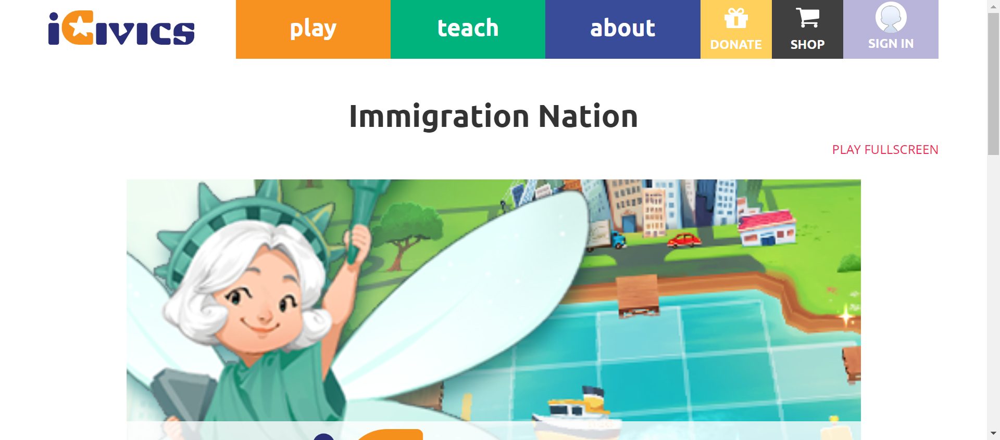 check_circle 9:08:16 PM The mouse over by xpath : (//*[@title='Play Games'])[3] is performed. 
check_circle 9:08:17 PM The element [[ChromeDriver: chrome on WINDOWS (a51bd590ffe68929fbfa2b27294daabc)] -> xpath: (//li[@class='race to ratify']/a)[2]] is visible 
check_circle 9:08:17 PM The expected text contains the actual RACE TO RATIFY 
check_circle 9:08:44 PM The Element RACE TO RATIFY clicked 
check_circle 9:08:45 PM The expected https://staging.d9.icivics.org/games/race-ratify url as same as the https://staging.d9.icivics.org/games/race-ratify actual url. 
check_circle 9:08:45 PM The expected text contains the actual Race to Ratify 
check_circle 9:08:46 PM All links in the play dropdown is verified sucessfully 
-
C12- If you are viewing one of the pages in the Play submenu, is that page underlined in the submenu?
Jun 28, 2022 09:13:59 PM 0h 5m 11s+283ms passStatus Timestamp Details check_circle 9:09:16 PM The Element play clicked 
check_circle 9:09:20 PM Playbutton submenu count is 17 
check_circle 9:09:25 PM The Element play clicked 
check_circle 9:09:31 PM Selected page is underlined 
check_circle 9:09:34 PM The Element play clicked 
check_circle 9:09:42 PM The Element play clicked 
check_circle 9:09:48 PM Selected page is underlined 
check_circle 9:09:51 PM The Element play clicked 
check_circle 9:10:00 PM The Element play clicked 
check_circle 9:10:06 PM Selected page is underlined 
check_circle 9:10:12 PM The Element play clicked 
check_circle 9:10:20 PM The Element play clicked 
check_circle 9:10:26 PM Selected page is underlined 
check_circle 9:10:28 PM The Element play clicked 
check_circle 9:10:36 PM The Element play clicked 
check_circle 9:10:43 PM Selected page is underlined 
check_circle 9:10:45 PM The Element play clicked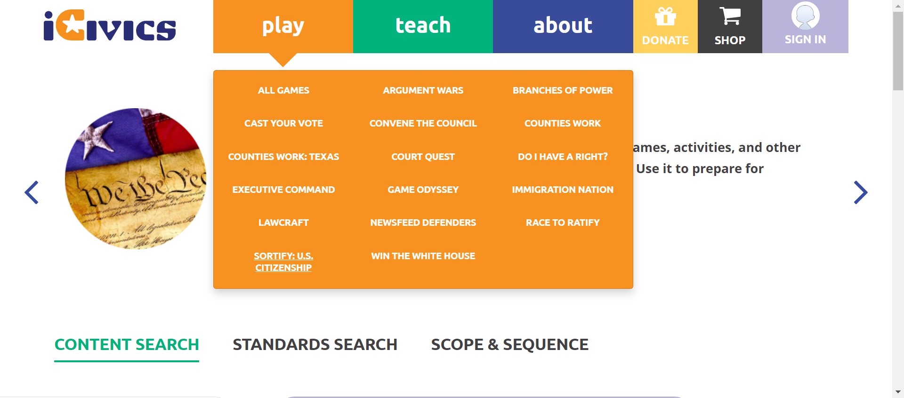 check_circle 9:10:52 PM The Element play clicked 
check_circle 9:10:59 PM Selected page is underlined 
check_circle 9:11:01 PM The Element play clicked 
check_circle 9:11:09 PM The Element play clicked 
check_circle 9:11:15 PM Selected page is underlined 
check_circle 9:11:17 PM The Element play clicked 
check_circle 9:11:25 PM The Element play clicked 
check_circle 9:11:31 PM Selected page is underlined 
check_circle 9:11:33 PM The Element play clicked 
check_circle 9:11:41 PM The Element play clicked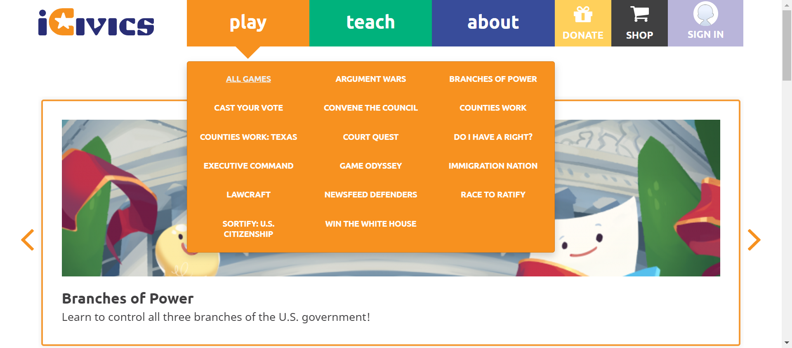 check_circle 9:11:47 PM Selected page is underlined 
check_circle 9:11:49 PM The Element play clicked 
check_circle 9:11:57 PM The Element play clicked 
check_circle 9:12:04 PM Selected page is underlined 
check_circle 9:12:06 PM The Element play clicked 
check_circle 9:12:14 PM The Element play clicked 
check_circle 9:12:20 PM Selected page is underlined 
check_circle 9:12:22 PM The Element play clicked 
check_circle 9:12:30 PM The Element play clicked check_circle 9:12:36 PM Selected page is underlined 
check_circle 9:12:38 PM The Element play clicked 
check_circle 9:12:46 PM The Element play clicked 
check_circle 9:12:52 PM Selected page is underlined 
check_circle 9:12:54 PM The Element play clicked 
check_circle 9:13:02 PM The Element play clicked check_circle 9:13:08 PM Selected page is underlined 
check_circle 9:13:10 PM The Element play clicked 
check_circle 9:13:18 PM The Element play clicked check_circle 9:13:25 PM Selected page is underlined 
check_circle 9:13:26 PM The Element play clicked 
check_circle 9:13:34 PM The Element play clicked 
check_circle 9:13:41 PM Selected page is underlined 
check_circle 9:13:43 PM The Element play clicked 
check_circle 9:13:51 PM The Element play clicked 
check_circle 9:13:57 PM Selected page is underlined 
check_circle 9:13:59 PM The Element play clicked 
-
C13- When you select Play again while the submenu is open, does the submenu close?
Jun 28, 2022 09:14:11 PM 0h 0m 7s+817ms passStatus Timestamp Details check_circle 9:14:10 PM playbutton submenu is display 
check_circle 9:14:11 PM The Element play clicked 
check_circle 9:14:11 PM On clicking Playbutton again submenu is close 
-
info_outline
check_circle
cancel
cancel
error
warning
redo
clear
Dashboard
Tests
45
Steps
540
Start
Jun 28, 2022 08:27:38 PM
End
Jun 28, 2022 09:14:12 PM
Time Taken
0h 46m 33s+631ms